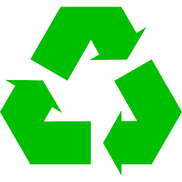
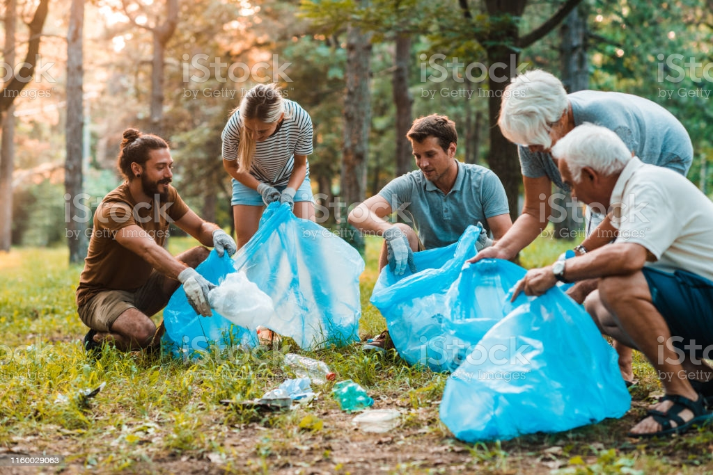
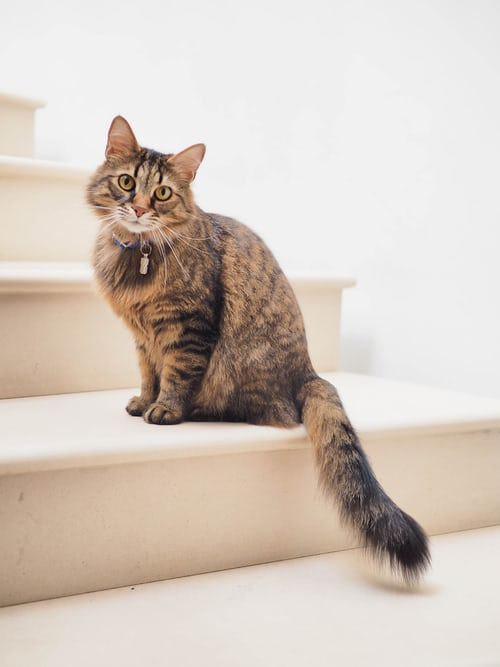
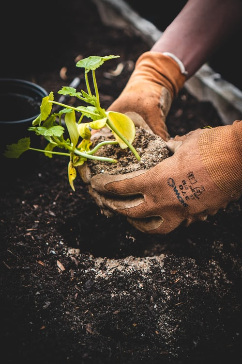

You can do a lot of things to help our cause! You could start by using less products that contain harmful chemicals like pesticides & opt for more environmental friendly options. You could also contribute directly by picking up litter in your town & reducing the waste that you produce as well. Remember even small things can lead to big changes!
|
We are hosting a weekly trash cleanup on saturday afternoons to help clean up the trash in the forest for a cleaner environment! Everyone is welcome to come and help us out! There will be food for everyone who helped out afterwards! Just show up! No registration needed! Have questions or comments? You can find info on how to reach us on our Contact Info page. |
 |
|---|---|
|  |
The Lepus Foundation will be hosting an adoption day for animals that are in need of a home on the 20th of every month. The animals that will be up for adoption were found in the streets sleeping in a pile of trash with no mother. We took them to the local animal hospital to get them all cleaned up. Now they just need a family to love them. Please help out by adopting one of these animals. What's that? You want to know more? The info on how to reach us is on the Contact Info page. |
|
The Lepus Foundation will be hosting a tree planting day at some old logging sites that had it's trees cut down. We are doing this so that we can preserve the forests and the wildlife that live in them. We will also be hosting a tree planting event on April 22 (Earth Day) along with an event afterwards that shows the progress that we've made and the influence that we have had on the wildlife, the forests, and everything else living on Earth! |
 |
Teachable Machine Image Model
To use our app, get out your phone's camera and take a picture of one of the four animals below. You will see some numbers below. The number that is closest to 1 will be the predicted animal that you scanned. Click on the link to that animal below the number and you will be taken to a page with information about that animal. We believe that with machine learning technology people will learn more about this animal and it will convince people to want to protect the animals.